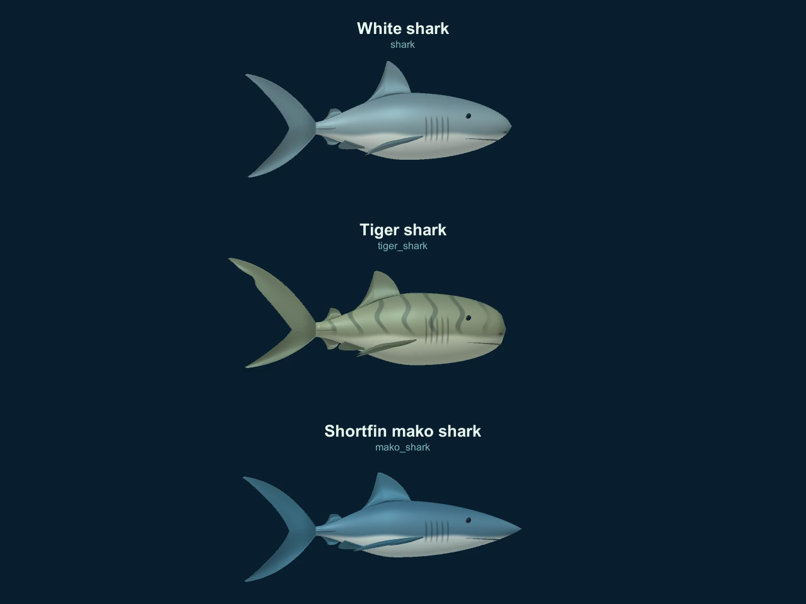
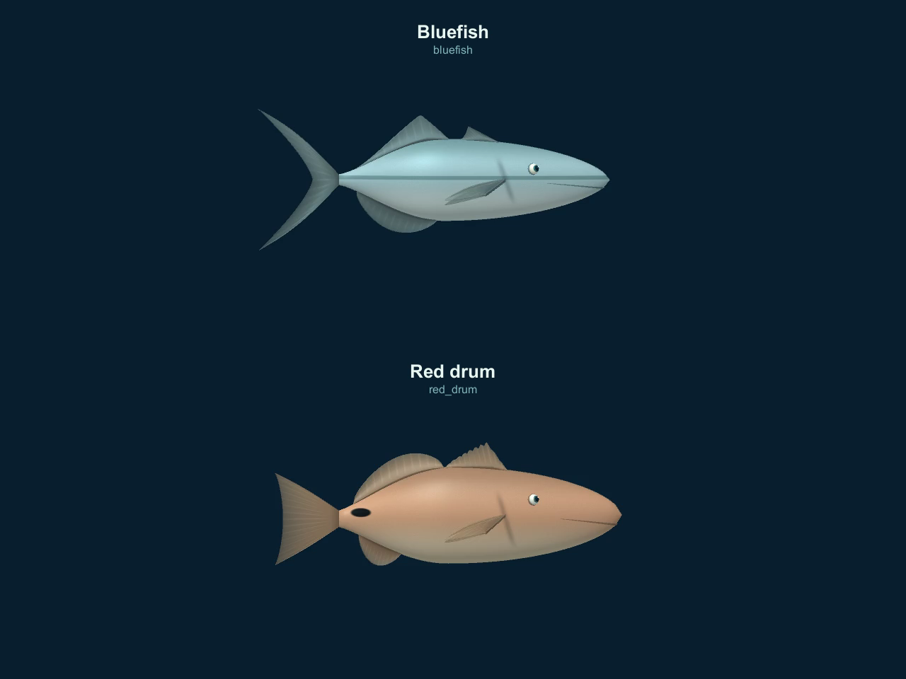
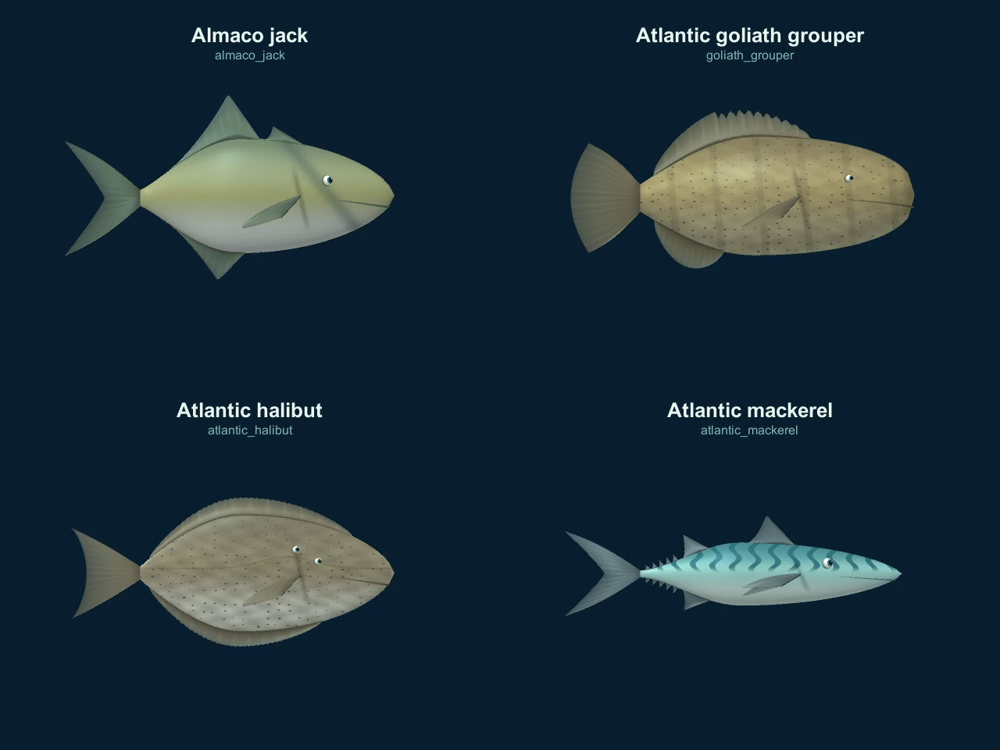
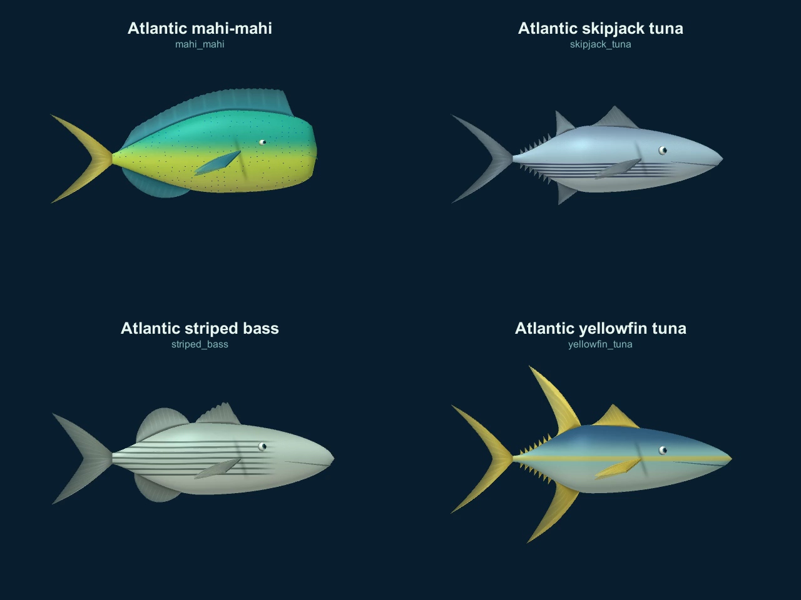

Native Unity animation loops with distinct anatomy and species markings. Start with the white shark comparison, then inspect tiger and mako or the new Atlantic fish.
Left: previous 3D white shark (v8). Right: this pass. Identical native turn inputs.



